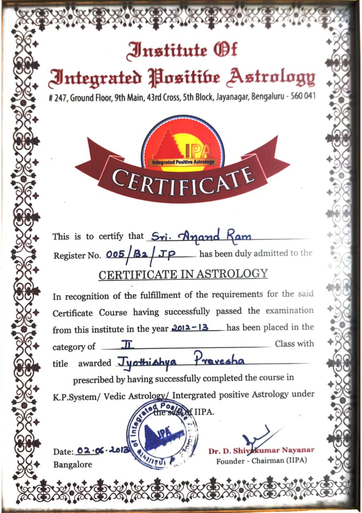

Qualifications & Experience
Diploma in Astrology (1st Class, title worded J. Visharadhya) and Jyothishya Praresha — 2012-13
13 years of professional consultation experience
Consultation modes: face to face, WhatsApp, phone
Certificates

Institute of Integrated Positive Astrology (IIPA), 2012–13: foundational training in traditional astrological systems and chart calculation.

IIPA, First Class Diploma, 2013–14: K.P. System, Vedic Astrology and Integrated Positive Astrology.

K.P. Stellar Astrological Research Institute (KPSARI, Chennai): study of the Krishnamurti Paddhati (KP System).